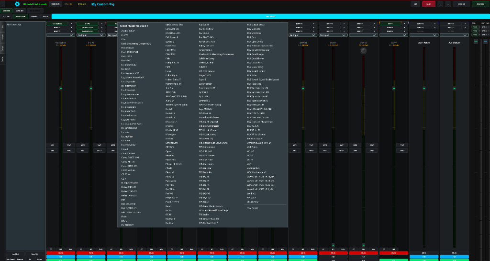
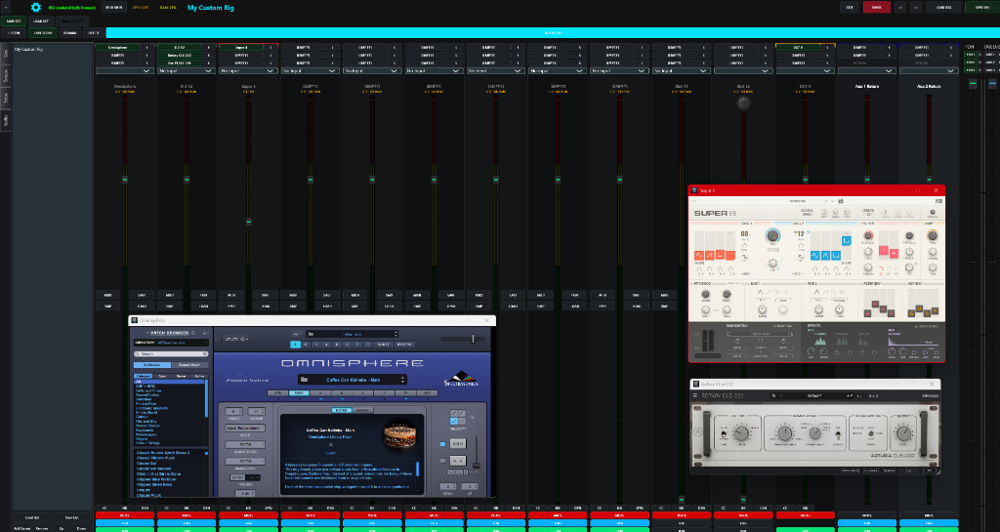
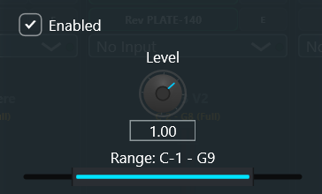
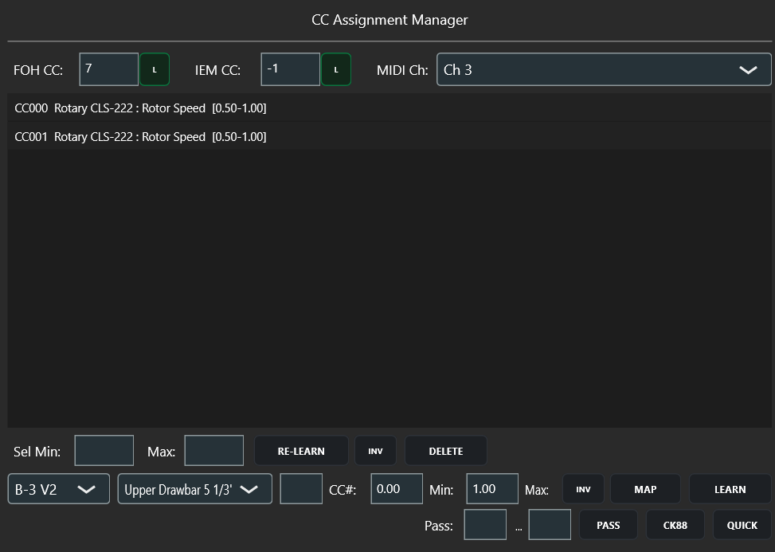

v1.0 · Sovereign Windows VST3 Host
Built for the Stage.
Zero Stuck Notes. Zero Dropouts.
A rack-based live VST3 engine designed specifically for keyboard players. Built for atomic song switching, instant panic recovery, dual FOH/IEM mixing, and rock-solid reliability.





Main rack interface featuring linear channel strips and dual-bus controls.
🔍 Click image to expand